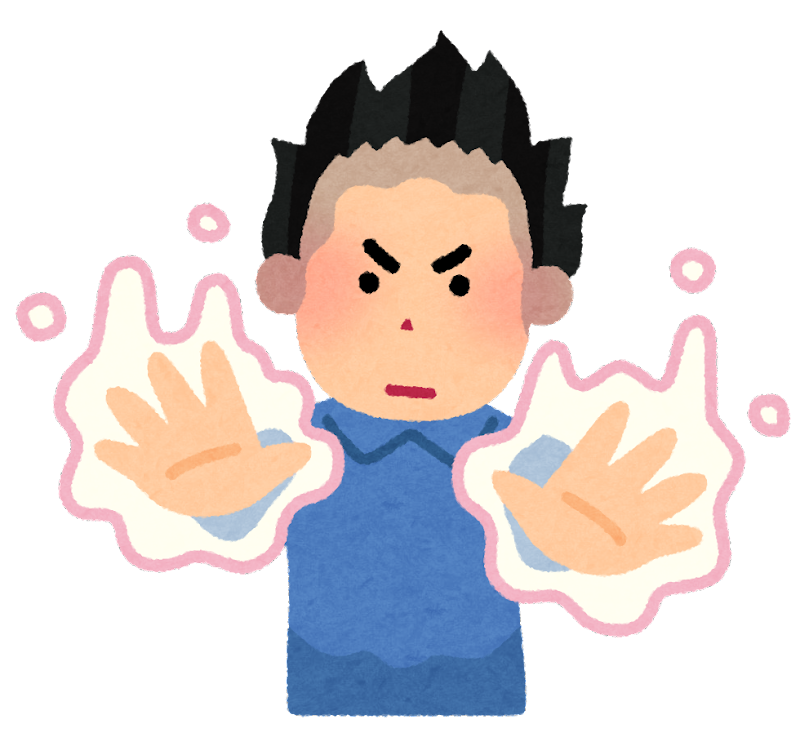
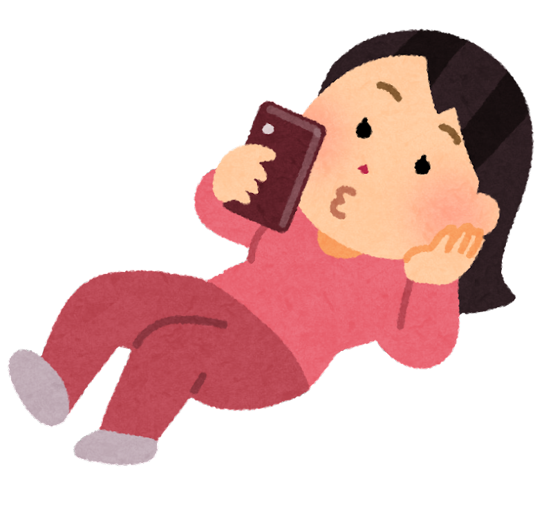
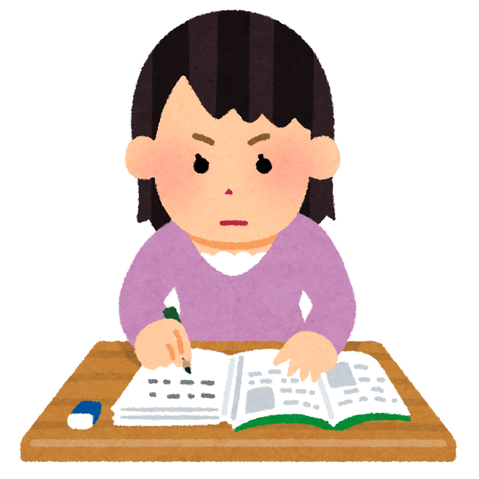

1. 집중력에도 종류가 있다.
인간은 모든 환경에 반응할 수 없다. 때문에 집중력이라는 힘을 사용해서 어떤것은 무시하고 어떤것은 뇌를 사용하게된다.
집중력은 다른 힘들과 마찬가지로 쓸수록 소모하는 힘이지만 장기적으로는 증가한다. 때문에 이 힘을 오랫동안 유지하면서 적재적소에 사용할 수 있도록 집중력이 무엇인지에 대해 알고있는 것이 중요하다.
집중력을 구분하는 종류는 다양하지만 오늘 알아볼 것은 바로 초점성 집중력과 반응성 집중력에 대한 것이다. 초점성 집중력은 나에게 필요한 주의를 유지하는 능동적 집중력이고 반응성 집중력은 외부 환경에서 자극이 들어왔을때 단기적으로 움직이는 집중력이다. 둘 중 어느 것이 좋고 나쁜것은 없다.
2. 집중력이 필요한 때는 언제일까?
최근에 내 일상에 추가된 일정들이 있다. 학원가기, 30분 책읽기 같은 초점을 맞춰 길게 집중해야하는 일들이다.
이 같은 경우에 초점성 집중력을 요구하며 지루하고 재미없는 일을 지속할 수 있게 도와준다.
이와 같이 다른 자극을 찾지 않고 한가지 일을 진행할 때 초점성 집중력이 필요하다.
3. 초점성 집중력을 키우는
습관에는 뭐가있을까?

처음 말했듯 집중력도 결국 힘이기 때문에 자주 다룰수록 강해지는 속성이있다. 때문에 점점 시간을 늘려가며 집중시간을 늘여가는 방법을 추천한다.
예를들면 나 같은 경우에는 외부자극을 강제적으로 차단하기 위해 책을 읽는 동안 남은 시간을 시각적으로 볼 수 있는 타임타이머를 앞에 두고 핸드폰은 책을 읽는 나를 촬영한다.

그렇게 하면 핸드폰을 보지 않아도 되고 알림이 울리지도 않기 때문에 주변 자극에 신경을 효과적으로 줄일 수 있다.